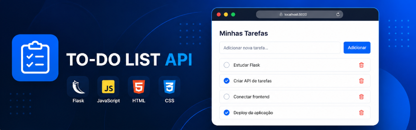

TO-DO LIST API

Visão Geral
A To-Do List API é uma aplicação fullstack desenvolvida para gerenciamento de tarefas, permitindo adicionar, listar, concluir e remover tarefas em uma interface web integrada a uma API REST construída com Flask.
O projeto foi criado com o objetivo de praticar integração entre frontend e backend, organização de aplicações web e manipulação de dados utilizando persistência em JSON.
Funcionalidades
- Cadastro de tarefas
- Listagem dinâmica de tarefas
- Marcação de tarefas como concluídas
- Remoção de tarefas
- Integração entre frontend e backend
- Persistência de dados em JSON
Tecnologias utilizadas
- Python
- Flask
- JavaScript
- HTML5
- CSS3
- JSON
- REST API
Aprendizados
Durante o desenvolvimento deste projeto, aprofundei meus conhecimentos em criação de APIs REST utilizando Flask, consumo de APIs com JavaScript, manipulação do DOM e organização de aplicações fullstack.
Também desenvolvi maior entendimento sobre requisições HTTP, rotas, tratamento de dados e persistência de informações em arquivos JSON.